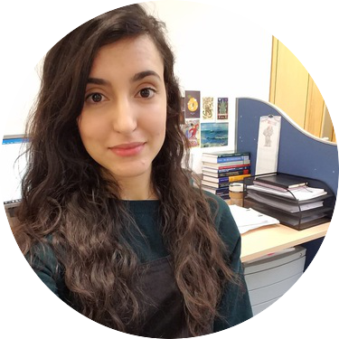

Committee 2020 - 2021
| Name | Position | Institute |
|---|---|---|
| Michael Fop | Chair | University College Dublin |
| Rafael de Andrade Moral | Vice-Chair | Maynooth University |
| Shirin Moghaddam | Secretary | University College Cork |
| Davood Roshan | Website Manager | NUI Galway |
| Fatima-Zahra Jaouimaa | Outreach Officer | University of Limerick |
| Felicity Lamrock | Ordinary Member | Queen’s University Belfast |
| Mimi Zhang | Ordinary Member | Trinity College Dublin |
| Niamh Cahill | Ordinary Member | Maynooth University |
| Amir Jalali | Ordinary Member | University College Cork |
| Lisa McFetridge | Ordinary Member | Queen’s University Belfast |
 Michael Fop – Chair
Michael Fop – Chair
I am Michael Fop, Assistant Professor in Statistics at University College Dublin. I received my PhD in Statistics from the same institution and before that I graduated in Economics, Finance and Statistics at the University of Perugia (Italy). My research focuses on latent variable and mixture models in application to high-dimensional and complex data. Data-related problems sparking my curiosity often drive my research and I enjoy developing new data analysis methods starting from application-motivated problems. I am an enthusiastic R user and package developer and truly believe that research outputs should be accompanied by related statistical software to widen impact and allow reproducibility. When I am not busy coding, teaching or doing research, I love wandering around the globe, hiking on top of mountains, jumping at music gigs, taking photographs, baking cakes, and watching pandas. See my personal webpage.
 Rafael de Andrade Moral – Vice-Chair
Rafael de Andrade Moral – Vice-Chair
My name is Rafael, I am a Lecturer in Statistics at Maynooth University. I hold a BSc in Biology and a PhD in Statistics from University of São Paulo, Brazil. I really enjoy teaching and doing research related to the development and application of statistical modelling techniques to Biology and Agriculture, more specifically Ecology and Entomology. I am also interested in the computational implementation of statistical models, especially under the form of R code. Besides the work in the academia, I enjoy playing guitar and writing music, as well as performing magic tricks. Last, but not least, I love German Shepherd dogs! My personal webpage.
 Shirin Moghaddam – Secretary
Shirin Moghaddam – Secretary
I obtained my PhD in Statistics from National University of Ireland, Galway after I had finished my Bachelor and Master degree in Statistics at the University of Tehran, Iran. Following my PhD, I joined the prostate cancer research group in UCD Conway Institute as a postdoctoral research fellow and worked on accurate grading and staging of prostate cancer. Currently, I am a Lecturer in Statistics at University College Cork. My research interests include Survival analysis, Bayesian approach and Machine learning, in particular, their application in cancer research.
Davood Roshan – Website Manager
I am Davood Roshan, a young statistician and lecturer in NUI Galway. My primary research interest is in the longitudinal analysis of clinical biomarkers. In particular, in my PhD, I developed individualised and dynamic reference ranges for clinical biomarkers that are recorded longitudinally over time. My research domain includes but not limited to medicine, sport, engineering, finance and etc. I also have special interest in translational statistics, data visualisations and data science with a focus on developing predictive tools.
 Fatima-Zahra Jaouimaa – Outreach Officer
Hi, I am Fatima Jaouimaa and I’m a PhD student in Statistics at the University of Limerick. I graduated with a BSc in Economics and Mathematical Sciences from the same university. My research area is survival analysis and in particular, I’m looking at multi-parameter regression in this setting.
Felicity Lamrock – Ordinary Member
Felicity is a Lecturer in Data Analytics at Queen’s University Belfast. She completed her PhD in Medical Statistics from Queen’s University Belfast in 2016. Felicity was previously a statistician at the National Centre for Pharmacoeconomics (NCPE) working with a team of pharmacists and clinicians on Health Technology Assessments to advise the Health Service Executive on the recommendation of new drug therapies in Ireland. She still remains a statistical advisor for the NCPE and is exploring how Northern Ireland could benefit from more decision modelling. Her main research interests therefore involve combining the areas of statistics, decision modelling, pharmacoeconomics and data analytics.
 Mimi Zhang – Ordinary Member
Mimi Zhang – Ordinary Member
Mimi Zhang joined Trinity College Dublin (TCD) as an assistant professor in October 2017. She holds a B.Sc. in statistics from University of Science and Technology of China and a Ph.D. in engineering management from City University of Hong Kong. Before joining TCD, she was a research associate at University of Strathclyde and Imperial College London. Her main research areas are data mining and operations research, including stochastic modelling, multivariate modelling, convex clustering, online anomaly detection, Markov decision process, dynamic vehicle routing, etc.
 Niamh Cahill – Ordinary Member
Niamh Cahill – Ordinary Member
I am an applied statistician with interests in developing statistical models for the analysis of time dependent, compositional and/or spatial data. One aspect of my research focuses on the development of statistical models to assess and interpret population-level health trends, specifically family planning indicators, on a national and sub-national level. As well as this I work on the statistical analysis of indicators of climate change, specifically sea-level change. I use a Bayesian approach to statistical modeling, which is suitable for developing complex hierarchical models, accounts for uncertainties related to model parameters, incorporates prior knowledge, and shares information across data populations. My research covers a range of statistical disciplines including: stochastic processes; time series analysis; computation and simulation and multivariate analysis.
 Amir Jalali – Ordinary Member
Amir Jalali – Ordinary Member
My name is Amir and I am a lecturer at University College Cork. I received my PhD from NUI Galway, where I worked on translational statistics and developed ‘DynNom’ package in R to visualise statistical models. During my postdoc in UCD, I’ve worked on developing predictive models for prostate cancer. My current research focuses on predictive models, model visualisation and cancer research.
 Lisa McFetridge – Ordinary Member
Lisa McFetridge – Ordinary Member
Lisa is a Lecturer in Statistics in the Mathematical Sciences Research Centre at Queen’s University Belfast. She completed her PhD in 2014, which developed robust joint models to analyse changing biomarkers and the risk of death for haemodialysis patients. Alongside furthering this work, Lisa’s current research interests focus on the advancement of mixed effects models, analysis of emotions using machine learning techniques, innovative survival analysis for medical research and discrete choice modelling of consumer demand. Lisa is the Education Officer of the Irish Statistical Association, Treasurer of the International Biometric Society British and Irish Region and is a member of the RSS Conferences & Events Programme Board. Her online profile can be found webpage